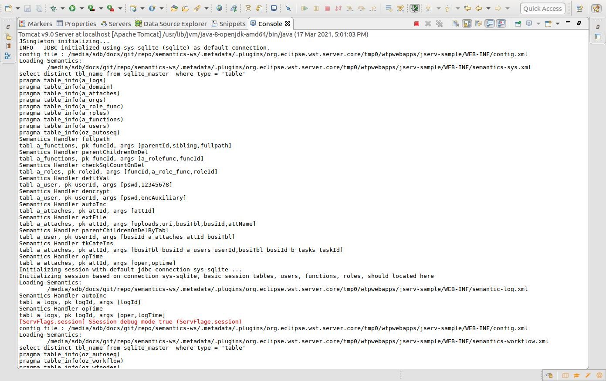

About JSample¶
The JSample is an example project showing how to use the semantic-jserv API to implement data service.
Before flowing steps in the Anclient’s quick start tutorial, you need to setup the sever. The 2 parts must work together though they can be deployed separately.
JSample is the semantic-* server side sample project, implemented ports like:
menu (menu.serv)
tools
...
Check javadoc: Samport for what JSample can do.
JSample Quick Start¶
Start with binary release¶
- download the latest archive from release section.
The zip file is a working sample project source for quick start. Unzip it to local file system.
- import eclipse project
In Eclipse:
File -> Import ... -> Existing Projects into Workspace
Navigate to where the package extracted.
- create a servlet server with parameter “io.oz.root-key”
Here is a sample contex.xml for Tomcat.
<?xml version="1.0" encoding="UTF-8"?>
<Context>
<WatchedResource>WEB-INF/web.xml</WatchedResource>
<WatchedResource>WEB-INF/tomcat-web.xml</WatchedResource>
<WatchedResource>${catalina.base}/conf/web.xml</WatchedResource>
<Parameter name="io.oz.root-key" value="0123456789ABCDEF" override="false"/>
</Context>
- deploy to the servlet container server
The sample project come with a sqlite3 db file and configured basice semantics. The project and deploy to tomcat with Eclipse, should reporting in console like:
{kind=link}
Visiting the login serv port:
http://<server>/<path e.g. jserv-sample>/login.serv11
You will get some json data like this:
{ "type": "io.odysz.semantic.jprotocol.AnsonMsg",
"code": "exSemantic",
"opts": null,
"port": "session",
"header": null,
"vestion": "1.0",
"body": [ { "type": "io.odysz.semantic.jprotocol.AnsonResp",
"rs": null,
"parent": "io.odysz.semantic.jprotocol.AnsonMsg",
"a": null,
"conn": null,
"m": "No envelope is available.",
"map": null
} ],
"seq": 0
}
The service is reporting “No envelope is available” because the request with GET doesn’t carry correct message. That means it’s running correctly. the next step should be using a client to visit the service.
Start from source¶
- Clone and Import Eclipse Project
You can clone and import the project from here: semantic-jserv repository.
The repository contains 2 Eclipse project, the semantic-jserv server library and the sample web application’s sample project, jserv-sample, showing how to use the library.
Just import the sample project located in folder “jserv-sample”.
- Check JDBC Connections
JSample using a sqlite3 db file as the default datasource for test. The provided project has some ready to run configurations.
For the first time beginner, it’s nothing to do here. More datasource configuration based on JDBC (both connection pool and driver manager mode) can be found in semantic-DA documents.
It’s recommended have a look at the JDBC connection file, located in:
src/main/webapp/WEB-INF/connects.xml
3.Update Maven Dependencies
Right click the imported project, then “Maven -> Update Project...”.
Wait for the project refreshed. Now the project should be ready to be deployed.
- Deploy the Web Application
In this step, you need to check the url path, which will be used to configure the client. The tomcat server.xml in Eclipse’s server configuration section may look like this:
<Server>
<Service>
<Engine>
...
<Host appBase="webapps" autoDeploy="true" name="localhost" unpackWARs="true">
<Context docBase="jserv-sample" path="/jsample" reloadable="true"
source="org.eclipse.jst.jee.server:jserv-sample"/>
</Host>
</Engine>
</Service>
</Server>
If everything goes ok, the console should showing message like this:
JSingleton initializing...
INFO - JDBC initialized using inet (mysql) as default connection.
config file : .../.metadata/.plugins/org.eclipse.wst.server.core/tmp1/wtpwebapps/jserv-sample/WEB-INF/config.xml
Loading Semantics:
.../.metadata/.plugins/org.eclipse.wst.server.core/tmp1/wtpwebapps/jserv-sample/WEB-INF/semantics.xml
show tables
show columns from a_attaches
show columns from ...
Note: while handling requests, you may find some error message in console like:
line 1:19 mismatched input '<EOF>' expecting '.'
That’s because of a warning message from antlr4 upon which semantic-* are heavily based. Till now we find is safe to ignore it.
Now, using a browser visiting e.g.:
http://localhost:8080/jserv-sample/login.serv11
and should get some error message like above.
That’s all! The sample service are running now. Next you should visit the service using one of the different version of Anclient. See the js client quick start and the java client (TODO doc).